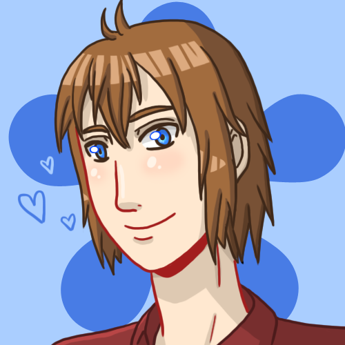

|  | |
|---|---|
| Estréia | |
| Memórias da Lua Cheia | |
| Informações Gerais | |
| Nome | Seth Elliot Miller |
| Estado | Vivo |
| Aniversário | 05/05 |
| Idade | Parte I: 19 anos Parte II: 20 anos |
| Altura | 1,81m |
| Peso | 78Kg |
| Signo | Touro |
| Tipo sanguíneo | A+ |
| Clã | ??? |
Seth é um rapaz relativamente misterioso que encontra Alissa na floresta na noite em que ela acorda sem memórias. Esconde vários segredos, sendo que alguns deles até ele aparentemente desconhece.